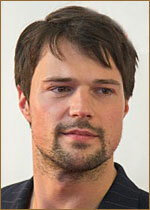

КОЗЛОВСКИЙ ДАНИЛА ВАЛЕРЬЕВИЧ
Автобиография

Родился 3 мая 1985 года в Москве.
В 2002 году окончил Кронштадтский Морской кадетский корпус.
В 2007 году окончил Санкт-Петербургскую академию театрального искусства (курс Льва Додина).
С 2006 года - актер Малого драматического театра (Театра Европы).
Заслуженный артист России (2018).
ТЕАТРАЛЬНЫЕ РАБОТЫ
- Эдгар - "Король Лир", У.Шекспир (2006, реж. Лев Додин);
- Новиков - "Жизнь и судьба", В.Гроссман (2007, реж. Лев Додин);
- Лоренцо — "Лорензаччо", Альфред де Мюссе (2010, реж. Клаудиа Стависки);
- Лопахин - "Вишнёвый сад", А.П.Чехов (2014, реж. Л.Додин).
ПРИЗЫ И НАГРАДЫ
- Лауреат премии российской кинокритики и кинопрессы «Белый слон» в номинации «За лучшую мужскую роль»
(2006, за роль в х/ф «Garpastum»);
- Премия ТОП-50 - «Самые знаменитые люди Петербурга» в номинации Кино (май 2013);
- Премия "Ника"(2015):
Лучший актер ("Духless 2");
- Номинация на премию "Ника" (2012):
Лучший актер ("Духless").